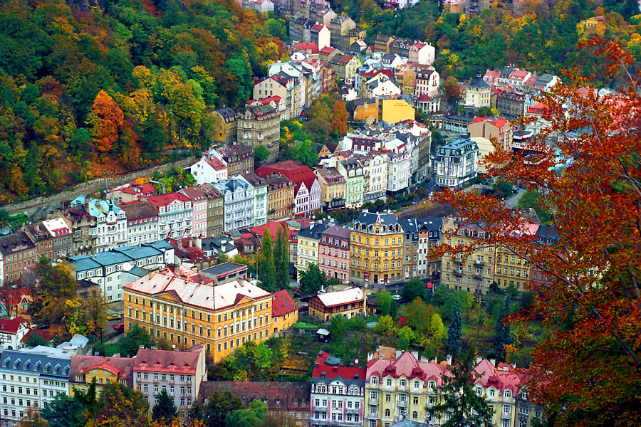
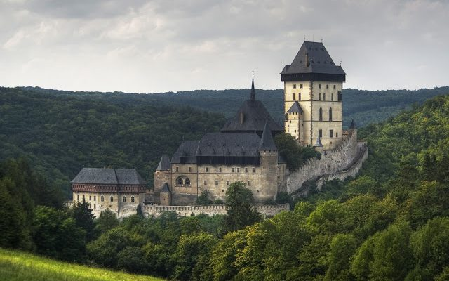
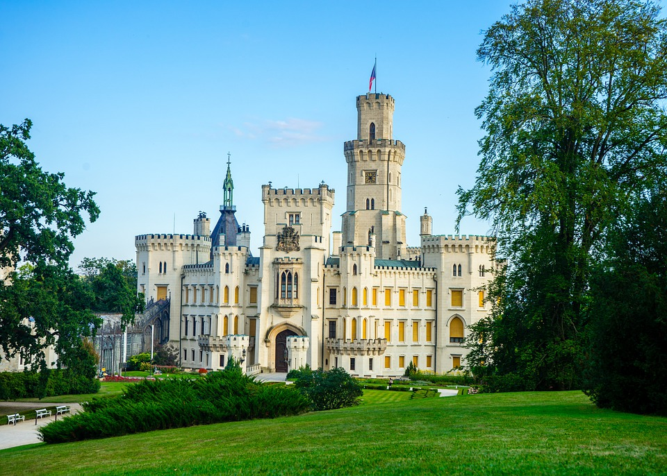
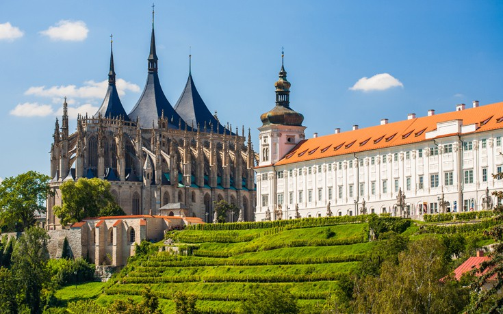
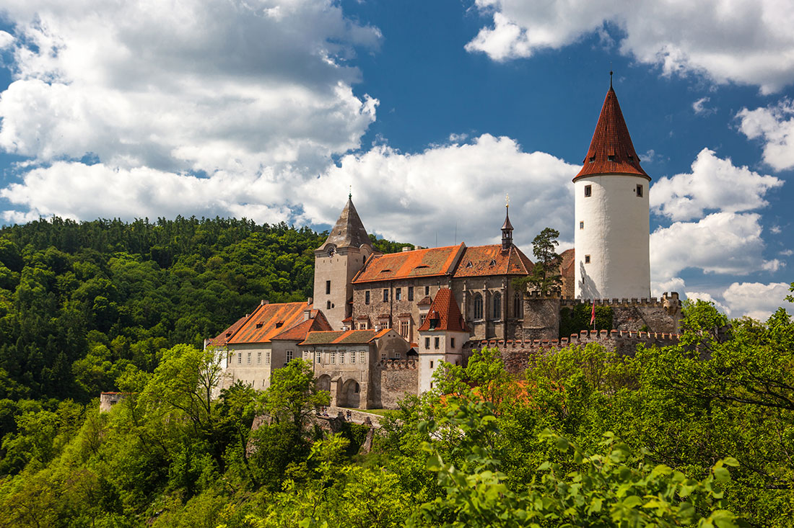

|  |
Η πόλη που αγάπησαν για τα θαυματουργά ιαματικά νερά της ο Γκαίτε, ο Μότσαρτ και ο Σοπέν! Βαθιά στο επιβλητικό βοημικό δάσος, η λουτρόπολη του Κάρλοβι Βάρι αποτελούσε, για πολλά χρόνια πριν από την έναρξη του Φεστιβάλ Κινηματογράφου, δημοφιλή τουριστικό προορισμό! |
Η παγκοσμίως φημισμένη λουτρόπολη Κάρλοβι Βάρι ιδρύθηκε από τον αυτοκράτορα Κάρολο Δ΄, το 14ο αιώνα. Βρίσκεται στη Δυτική Βοημία, 120 χλμ έξω από την Πράγα, κοντά στα σύνορα με την Γερμανία. Είναι κυριολεκτικά πνιγμένη μέσα στα δάση της κοιλάδας του μικρού ποταμού Τέπλα, και φημίζεται για τις 12 θερμές ιαματικές πηγές της. Η επίσκεψη της λουτρόπολης αυτής, μοιάζει πραγματικά με ένα παραμύθι.
|  |
Το εντυπωσιακό γοτθικό κάστρο Κάρλστεϊν βρίσκεται 40 χλμ νοτιοδυτικά της Πράγας, χωμένο στα πυκνά δάση της Βοημίας. Στεφανώνει μια βραχώδη κορυφή που υψώνεται πάνω από την κοιλάδα του ποταμού Μπεροούνκα! |
Το περιτειχισμένο oχυρό του Κάρλσταιν,στο κέντρο του καρστ της Βοημίας, καταλαμβάνει μια απόκρημνη λοφοπλαγιά πάνω από τον ποταμό Μπέρουνκα. Αξίζει να επισκεφθείτε το εσωτερικό του , μολονότι έχει απογυμνωθεί τελείως. Ωστόσο μπορείτε να δείτε τα διαμερίσματα του Καρόλου Δ' , καθώς και δύο εξαιρετικά παρεκκλήσια .
Το Κάρλσταϊν είναι τόσο προσφιλές στους τουρίστες ώστε ο δρόμος προς αυτο είναι γεμάτος τουριστικά μαγαζιά και σνακ μπαρ . Τα τρένα για το Κάρλσταϊν αναχωρούν ανά μία ώρα από το σταθμό Σμίχοβ της Πράγας. Η διαδρομή μέχρι την είσοδο του κάστρου διαρκεί 15 λεπτά , ενώ το καλοκαίρι μπορείτε να νοικιάσετε μια άμαξα , που θα σας μεταφέρει σχεδόν μέχρι εκεί .
|  |
Το παλάτι είναι πολύ όμορφο και καλά διατηρημένο. Καταπληκτική διακόσμηση, εξαιρετικά έργα τέχνης και έπιπλα. Το κτήμα βρίσκεται λίγο μακριά από την κύρια δράση, ωστόσο αξίζει τον κόπο να περιηγηθείτε! |
Το κάστρο Χλουμποκά βρίσκεται στην νότια Βοημία, 150 χλμ από την Πράγα. Η λαμπερή λευκή σιλουέτα του κάστρου αναδύεται δραματικά μέσα από το ανάγλυφο του τοπίου και το μαγευτικό κτίσμα θυμίζει κάστρο από τα παιδικά μας παραμύθια. Μιμείται το αγγλικό γοτθικό κάστρο Windsor και θεωρείται η πιο όμορφη εξοχική κατοικία της Τσεχίας. Εντυπωσιάζει κάθε επισκέπτη το όμορφο πάρκο με τη μεγάλη ποικιλία από λουλούδια και εξωτικά δένδρα.
|  |
Η γραφική πόλη έχει ανακηρυχτεί μνημείο Παγκόσμιας Πολιτιστικής Κληρονομιάς της Unesco που συναγωνιζόταν τον 14ο αιώνα την Πράγα σε πλούτο και φήμη! |
Η Κούντα Χόρα ήταν μια από τις πιο σημαντικές πόλεις κεντρικής Ευρώπης κατά το Μεσαίωνα στη Βοημία δεύτερη σε μέγεθος μετά την Πράγα. Τα ορυχεία αργύρου αποτέλεσαν τη βάση για την ευημερία της. Η ίδρυση του βασιλικού νομισματοκοπείου γύρω στα 1300 , στο οποίο απασχολούνταν Ιταλοί , της χάρισε ακόμη πιο έντονο κοσμοπολίτικο χαρακτήρα. Τρεις αιώνες αργότερα , η πόλη έπεσε σε παρακμή γιατί τα ορυχεία εξαντλήθηκαν. Αξίζει να επισκεφθεί κανείς την γοτθική εκκλησία της Αγίας Βαρβάρας, προστάτιδας των μεταλλωρύχων που χρονολογείται από το 1388 καθώς και τον Πέτρινο Οίκο.
|  |
Τον 13ο αιώνα, το γοτθικό κάστρο εξυπηρετούσε την οχύρωση της περιοχής. Το 1887, ο αρχιδούκας Φραγκίσκος Φερδινάνδος αγόρασε το Κονόπιστε και το επανακατασκεύασε σαν πολυτελή κατοικία του μελλοντικού Αυτοκράτορα! |
Ο πύργος του Κονόπιστε είναι χτισμένος σε ένα όμορφο πάρκο με ένα φημισμένο ροδόκηπο. Ανήκε στον αρχιδούκα Φραντς Φέρντιναντ ντ ' Εστέ των Αψβούργων , από το 1887 μέχρι τη δολοφονία του στο Σαράγεβο το 1914. Θα χρειαστεί να το επισκεφθείτε τρεις φορές για να δείτε ολόκληρο το εσωτερικό του. Η πρώτη ξενάγηση περιλαμβάνει τις πολυτελείς αίθουσες , η δεύτερη τη συλλογή όπλων και πανοπλιών της οικογένειας Εστέ και η τρίτη τα ιδιαίτερα διαμερίσματα του αρχιδούκα και της οικογένειάς του. Οι διάδρομοι , γεμάτου κυνηγετικά λάφυρα, αντικατοπτρίζουν το πάθος του Φραντς Φέρντιναντ για το κυνήγι.